<meta charset="utf-8">
<title>Plantão Piercing</title>
<link rel="preconnect" href="https://fonts.googleapis.com">
<link rel="preconnect" href="https://fonts.gstatic.com" crossorigin>
<link rel="stylesheet" href="https://fonts.googleapis.com/css2?family=Archivo:wght@400;600;800&family=IBM+Plex+Mono:wght@500&family=Unbounded:wght@700;900&display=swap">
<style>
/* Layout: espelho de pauta de redação. Calendário em tabela, cada pauta com capa à esquerda e roteiro à direita. */
:root {
  --preto: #0b0707;
  --painel: #150c0c;
  --linha: #2c1a1a;
  --osso: #f1e9e6;
  --cinza: #b6a4a2;
  --sangue: #8e0710;
  --sangue-vivo: #ec2a33;
  --verde: #6fcf8e;
  --display: 'Unbounded', 'Arial Black', sans-serif;
  --texto: 'Archivo', 'Helvetica Neue', Arial, sans-serif;
  --mono: 'IBM Plex Mono', ui-monospace, 'SFMono-Regular', monospace;
  color-scheme: dark;
}
* { box-sizing: border-box; }
body { background: var(--preto); color: var(--osso); font: 400 16px/1.6 var(--texto); }
.pagina { max-width: 1120px; margin: 0 auto; padding-inline: 20px; padding-block: 40px 80px; display: grid; gap: 72px; }
a { color: var(--osso); text-decoration-color: var(--sangue-vivo); text-underline-offset: 3px; }
a:focus-visible, button:focus-visible { outline: 2px solid var(--sangue-vivo); outline-offset: 3px; }
h1, h2, h3, h4 { text-wrap: balance; margin: 0; }
h2 { font: 900 clamp(22px, 3.2vw, 30px)/1.15 var(--display); text-transform: uppercase; letter-spacing: -.005em; }
h3 { font: 800 24px/1.2 var(--texto); }
h4 { font: 600 13px/1.3 var(--mono); letter-spacing: .12em; text-transform: uppercase; color: var(--cinza); }
p { margin: 0; }
.mono { font: 500 12px/1.4 var(--mono); letter-spacing: .1em; color: var(--cinza); }
.peq { font-size: 14px; color: var(--cinza); }
.secao { display: grid; gap: 24px; }
.secao > header { display: grid; gap: 8px; max-width: 68ch; }
.secao > header p { color: var(--cinza); }

/* topo */
.topo { display: grid; gap: 20px; padding-bottom: 32px; border-bottom: 1px solid var(--linha); }
.olho { display: flex; flex-wrap: wrap; gap: 10px; align-items: center; }
.live { display: inline-flex; align-items: center; gap: 8px; background: var(--sangue); color: var(--osso); font: 800 12px/1 var(--texto); letter-spacing: .16em; padding: 8px 12px; }
.live i { width: 7px; height: 7px; border-radius: 50%; background: var(--osso); }
h1 { font: 900 clamp(40px, 8vw, 84px)/.95 var(--display); text-transform: uppercase; letter-spacing: -.02em; }
h1 em { font-style: normal; color: var(--sangue-vivo); }
.lede { font-size: 19px; max-width: 62ch; color: var(--osso); }
.numeros { display: flex; flex-wrap: wrap; gap: 10px 28px; font: 500 14px/1.4 var(--mono); color: var(--cinza); }
.numeros strong { color: var(--osso); font-weight: 500; }
.aviso { border-left: 3px solid var(--sangue-vivo); padding: 10px 14px; background: var(--painel); max-width: 70ch; font-size: 15px; }

/* espelho */
.tabela { overflow-x: auto; border: 1px solid var(--linha); }
table { border-collapse: collapse; width: 100%; min-width: 560px; font-size: 15px; }
th, td { text-align: left; padding: 11px 14px; border-bottom: 1px solid var(--linha); vertical-align: middle; }
th { font: 500 11px/1.2 var(--mono); letter-spacing: .12em; text-transform: uppercase; color: var(--cinza); background: var(--painel); }
tr:last-child td { border-bottom: 0; }
td.num { font: 500 14px/1 var(--mono); font-variant-numeric: tabular-nums; }
td.dia { color: var(--cinza); font-size: 14px; }
.chip { display: inline-block; font: 600 11px/1 var(--mono); letter-spacing: .06em; text-transform: uppercase; padding: 6px 8px; border: 1px solid; white-space: nowrap; }
.chip.ok { color: var(--verde); border-color: color-mix(in srgb, var(--verde) 45%, transparent); }
.chip.no { color: var(--sangue-vivo); border-color: color-mix(in srgb, var(--sangue-vivo) 55%, transparent); }

/* pautas */
.pautas { display: grid; gap: 28px; }
.pauta { display: grid; grid-template-columns: minmax(0, 340px) minmax(0, 1fr); gap: 28px; padding: 24px; background: var(--painel); border: 1px solid var(--linha); scroll-margin-top: 16px; }
.capa img { display: block; width: 100%; height: auto; aspect-ratio: 4 / 5; max-width: 100%; }
.corpo { display: grid; gap: 14px; align-content: start; min-width: 0; }
.meta { display: flex; flex-wrap: wrap; gap: 8px 14px; align-items: center; font: 500 13px/1.3 var(--mono); color: var(--cinza); }
.meta .data { color: var(--osso); }
.nota { color: var(--cinza); font-size: 15px; }
.slides { margin: 0; padding-left: 26px; display: grid; gap: 6px; font-size: 15px; }
.slides li::marker { font: 500 12px var(--mono); color: var(--sangue-vivo); }
.slides em, h1 em { font-style: normal; color: var(--sangue-vivo); }
.slides b { font-weight: 800; }
.leg-cab { display: flex; justify-content: space-between; align-items: center; gap: 12px; flex-wrap: wrap; }
pre.legenda { margin: 0; white-space: pre-wrap; font: 400 15px/1.55 var(--texto); background: var(--preto); border: 1px solid var(--linha); padding: 14px; }
.copiar { font: 600 12px/1 var(--mono); letter-spacing: .08em; text-transform: uppercase; color: var(--osso); background: var(--sangue); border: 0; padding: 9px 12px; cursor: pointer; }
.copiar:hover { background: #a50a14; }
.fontes { margin: 0; padding-left: 18px; font-size: 14px; display: grid; gap: 4px; }

/* carrossel completo */
.tira { display: grid; grid-auto-flow: column; grid-auto-columns: minmax(220px, 260px); gap: 12px; overflow-x: auto; padding-bottom: 10px; scroll-snap-type: x mandatory; }
.tira a { scroll-snap-align: start; }
.tira img { display: block; width: 100%; height: auto; aspect-ratio: 4 / 5; }

/* fotos */
.fotos { display: grid; grid-template-columns: repeat(auto-fill, minmax(min(100%, 220px), 1fr)); gap: 16px; }
.fotos figure { margin: 0; display: grid; gap: 8px; }
.fotos img { display: block; width: 100%; height: auto; aspect-ratio: 4 / 5; }
.fotos figcaption { display: grid; gap: 2px; font-size: 14px; color: var(--cinza); }

/* funil e números */
.duas { display: grid; grid-template-columns: repeat(auto-fit, minmax(min(100%, 320px), 1fr)); gap: 28px; }
.passos { margin: 0; padding: 0; list-style: none; counter-reset: p; display: grid; gap: 16px; }
.passos li { counter-increment: p; display: grid; grid-template-columns: 40px 1fr; gap: 12px; }
.passos li::before { content: counter(p, decimal-leading-zero); font: 900 20px/1.2 var(--display); color: var(--sangue-vivo); }
.passos strong { display: block; }
.contas { display: grid; gap: 0; border: 1px solid var(--linha); }
.contas div { display: flex; justify-content: space-between; gap: 16px; padding: 12px 14px; border-bottom: 1px solid var(--linha); }
.contas div:last-child { border-bottom: 0; }
.contas dt { color: var(--cinza); font-size: 15px; }
.contas dd { margin: 0; font: 500 15px/1.4 var(--mono); font-variant-numeric: tabular-nums; text-align: right; }

/* anúncios */
.anuncios { display: grid; grid-template-columns: repeat(auto-fit, minmax(min(100%, 280px), 1fr)); gap: 16px; }
.anuncio { display: grid; gap: 10px; align-content: start; padding: 18px; border: 1px solid var(--linha); background: var(--painel); }
.anuncio .copiar { justify-self: start; }
.reels { margin: 0; padding: 0; list-style: none; display: grid; gap: 12px; }
.reels li { display: grid; gap: 2px; padding-bottom: 12px; border-bottom: 1px solid var(--linha); }
.reels span { color: var(--cinza); font-size: 14px; }

/* regras */
.regras { margin: 0; padding: 0; list-style: none; display: grid; grid-template-columns: repeat(auto-fit, minmax(min(100%, 300px), 1fr)); gap: 16px; }
.regras li { padding: 16px; border-top: 3px solid var(--sangue); background: var(--painel); display: grid; gap: 6px; font-size: 15px; }
.regras strong { font-size: 16px; }

@media (max-width: 720px) {
  .pauta { grid-template-columns: 1fr; padding: 16px; }
  .capa { max-width: 420px; }
  .pagina { gap: 56px; padding-block: 28px 60px; padding-inline: 16px; }
}
@media (prefers-reduced-motion: no-preference) {
  .live i { animation: pisca 1.6s ease-in-out infinite; }
  @keyframes pisca { 50% { opacity: .25; } }
}
</style>

<main class="pagina">
  <header class="topo">
    <p class="olho"><span class="live"><i></i>PLANTÃO</span><span class="mono">CURSO DE BODY PIERCING · TICKET R$250 · 08/10 → 30/11/2026</span></p>
    <h1>Plantão <em>Piercing</em></h1>
    <p class="lede">Onze pautas de newsjacking com notícias reais desta semana até a Black Friday, com capas prontas em 1080×1350 na paleta vermelho sangue e preto, usando a foto do profissional tratada.</p>
    <p class="numeros"><span><strong>11</strong> capas prontas</span><span><strong>1</strong> carrossel completo</span><span><strong>6</strong> versões da foto</span><span><strong>3</strong> anúncios de venda</span><span><strong>5</strong> ganchos de Reels</span></p>
    <p class="aviso">Antes de postar: troque <strong>@seu.perfil</strong> e a marca <strong>BP</strong> pelo seu @ e logo. Dados de eleição e famosos foram conferidos em 08/10/2026; confira de novo no dia da postagem.</p>
  </header>

  <section class="secao" id="espelho">
    <header><h2>Espelho de pauta</h2><p>Ordem de postagem. Três carrosséis por semana; o do umbigo (13/11) é o melhor candidato a anúncio.</p></header>
    <div class="tabela"><table>
      <thead><tr><th>Data</th><th>Dia</th><th>Pauta</th><th>Público</th><th>Mídia paga</th></tr></thead>
      <tbody><tr><td class="num">08/10</td><td class="dia">qui</td><td><a href="#c01">As pesquisas erraram</a></td><td>Ambos</td><td><span class="chip no">Só orgânico</span></td></tr>
<tr><td class="num">10/10</td><td class="dia">sáb</td><td><a href="#c02">A fila do primeiro brinco</a></td><td>Profissional</td><td><span class="chip ok">Pode impulsionar</span></td></tr>
<tr><td class="num">14/10</td><td class="dia">qua</td><td><a href="#c03">Ganchos em Joinville</a></td><td>Iniciante</td><td><span class="chip ok">Pode impulsionar</span></td></tr>
<tr><td class="num">19/10</td><td class="dia">seg</td><td><a href="#c04">Instagram virou pago</a></td><td>Profissional</td><td><span class="chip ok">Pode impulsionar</span></td></tr>
<tr><td class="num">23/10</td><td class="dia">sex</td><td><a href="#c05">Domingo, 25</a></td><td>Ambos</td><td><span class="chip no">Só orgânico</span></td></tr>
<tr><td class="num">29/10</td><td class="dia">qui</td><td><a href="#c06">Halloween de verdade</a></td><td>Ambos</td><td><span class="chip ok">Pode impulsionar</span></td></tr>
<tr><td class="num">03/11</td><td class="dia">ter</td><td><a href="#c07">R$ 1.741</a></td><td>Iniciante</td><td><span class="chip ok">Pode impulsionar</span></td></tr>
<tr><td class="num">06/11</td><td class="dia">sex</td><td><a href="#c08">R$ 19 mil</a></td><td>Profissional</td><td><span class="chip ok">Pode impulsionar</span></td></tr>
<tr><td class="num">10/11</td><td class="dia">ter</td><td><a href="#c09">A IA não fura</a></td><td>Iniciante</td><td><span class="chip ok">Pode impulsionar</span></td></tr>
<tr><td class="num">13/11</td><td class="dia">sex</td><td><a href="#c10">Umbigo no Carnaval</a></td><td>Ambos</td><td><span class="chip ok">Pode impulsionar</span></td></tr>
<tr><td class="num">23/11</td><td class="dia">seg</td><td><a href="#c11">Black Friday</a></td><td>Ambos</td><td><span class="chip ok">Pode impulsionar</span></td></tr></tbody>
    </table></div>
    <p class="peq">Pauta reativa: no dia 26/10, com o resultado do 2º turno, poste um slide único e neutro: “Segunda-feira. O seu cliente continua precisando de alguém que fure certo.” Deixe pronto antes, sem citar quem ganhou.</p>
  </section>

  <section class="secao" id="pautas">
    <header><h2>As pautas</h2><p>Toque na capa para abrir em tamanho real e salvar. Os slides internos seguem o modelo do carrossel completo logo abaixo.</p></header>
    <div class="pautas">
<article class="pauta" id="c01">
  <a class="capa" href="capas/c01-capa.jpg" target="_blank" rel="noopener">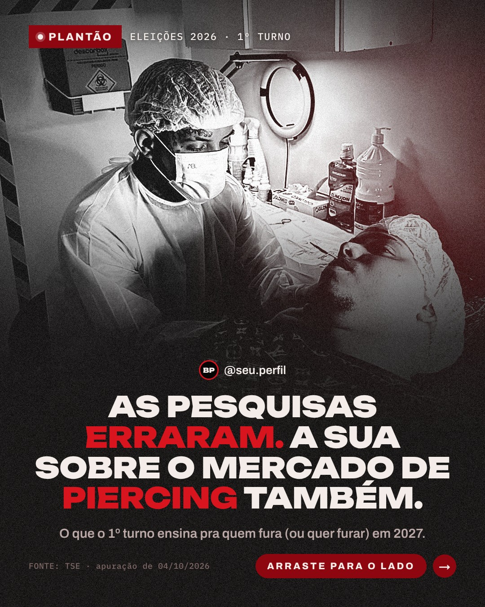</a>
  <div class="corpo">
    <p class="meta"><span class="data">08/10 · qui</span><span>Ambos</span><span class="chip no">Só orgânico</span></p>
    <h3>As pesquisas erraram</h3>
    <p class="nota">Cita eleição: só orgânico. Não impulsione.</p>
    <h4>Roteiro dos slides</h4>
    <ol class="slides"><li>Capa.</li><li>4 de outubro. As pesquisas do ano apontavam Lula à frente no 1º turno. Resultado: Flávio 47,03%, Lula 45,16%.</li><li>Este post não é sobre política. É sobre o erro de olhar só a pesquisa e ignorar a rua.</li><li>A “pesquisa” que você escuta sobre piercing: “é moda passageira”. “Tem piercer demais.” “Ninguém paga caro por furo.”</li><li>A rua diz outra coisa: o piercing no umbigo voltou em 2026, a curated ear dominou o tapete vermelho do Oscar e tem famosa pagando até R$19 mil numa joia.</li><li>Saturado está o furo malfeito. Cliente não procura quem fura barato. Procura quem não deixa inflamar.</li><li>O que separa os dois: técnica com agulha, biossegurança de verdade, anatomia, joia certa e pós-cuidado bem explicado.</li><li>Iniciante: é isso que você aprende antes do primeiro cliente. Profissional: é isso que te tira da guerra de preço.</li><li>Curso de Body Piercing para iniciantes e profissionais. R$250 ou 12x. Link na bio.</li><li>Dia 25 o país decide. A sua decisão pode ser hoje.</li></ol>
    <div class="leg-cab"><h4>Legenda</h4><button type="button" class="copiar" data-alvo="leg-c01">Copiar legenda</button></div>
    <pre class="legenda" id="leg-c01">As pesquisas erraram. E a sua leitura do mercado de piercing?

Enquanto tem gente repetindo que “piercing é modinha”, o umbigo voltou, a orelha virou projeto e cliente paga caro por quem fura certo.

Iniciante ou profissional: o curso está no link da bio.</pre>
    <h4>Fontes da notícia</h4>
    <ul class="fontes"><li><a href="https://portaldeprefeitura.com.br/bastidores-da-politica/eleicoes-2026-com-100-das-secoes-totalizadas-flavio-tem-4703-e/633498/" target="_blank" rel="noopener">Portal de Prefeitura: 100% das seções, Flávio 47,03%</a></li><li><a href="https://www.congressoemfoco.com.br/noticia/122884/flavio-e-lula-vao-ao-segundo-turno-da-eleicao-presidencial" target="_blank" rel="noopener">Congresso em Foco: Flávio e Lula vão ao 2º turno</a></li></ul>
  </div>
</article>

<article class="pauta" id="c02">
  <a class="capa" href="capas/c02-capa.jpg" target="_blank" rel="noopener">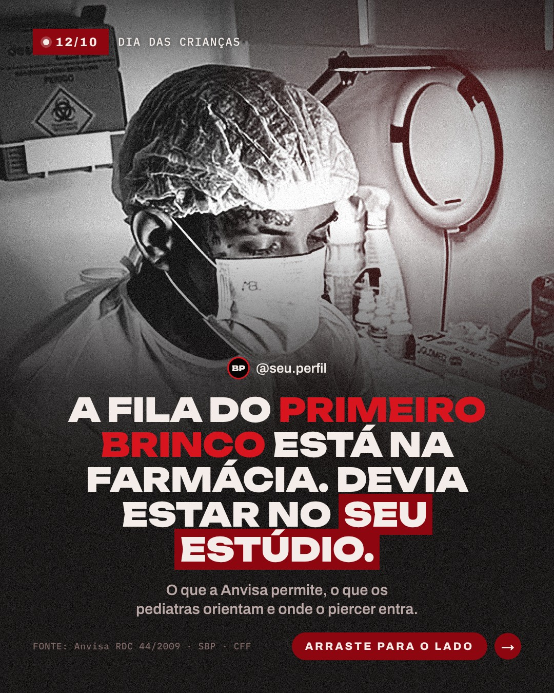</a>
  <div class="corpo">
    <p class="meta"><span class="data">10/10 · sáb</span><span>Profissional</span><span class="chip ok">Pode impulsionar</span></p>
    <h3>A fila do primeiro brinco</h3>
    <p class="nota">Pode impulsionar para público adulto (pais e piercers). Sem foto de bebê no anúncio.</p>
    <h4>Roteiro dos slides</h4>
    <ol class="slides"><li>Capa.</li><li>Feriado de 12/10: fila na farmácia pro primeiro brinco. É permitido. A RDC 44/2009 da Anvisa autoriza farmácia a perfurar o lóbulo com aparelho próprio e registrado.</li><li>Mas em 2025 o próprio Conselho Federal de Farmácia propôs atualizar a regra, citando que a pressão da pistola tradicional assusta crianças e adultos.</li><li>O tema voltou em agosto: a médica e ex-BBB Laís Caldas contou que a filha nasceu com lóbulo bífido.</li><li>O que pediatras costumam orientar: esperar pelo menos 2 meses de vida, depois das primeiras vacinas. Muitos preferem depois dos 6 meses.</li><li>Onde o piercer entra: avaliação do lóbulo, marcação simétrica, técnica, joia adequada e orientação clara pros pais.</li><li>Regras do jogo: autorização e presença dos responsáveis, alvará sanitário em dia e a lei do seu estado e município para menores.</li><li>Furo infantil feito com calma e técnica é um nicho que fica com quem se preparou. (Use este slide só se o curso tiver essa aula.)</li><li>Curso de Body Piercing para iniciantes e profissionais. R$250 ou 12x. Link na bio.</li></ol>
    <div class="leg-cab"><h4>Legenda</h4><button type="button" class="copiar" data-alvo="leg-c02">Copiar legenda</button></div>
    <pre class="legenda" id="leg-c02">Segunda é Dia das Crianças e a fila do primeiro brinco vai pra farmácia.

É permitido. Mas existe outro jeito de fazer, e quem domina esse atendimento ganha a confiança da família inteira.

O que a Anvisa permite e o que os pediatras orientam está no carrossel.</pre>
    <h4>Fontes da notícia</h4>
    <ul class="fontes"><li><a href="https://site.cff.org.br/noticia/noticias-do-cff/28/07/2025/farmaceuticos-propoem-norma-para-furo-na-orelha-com-foco-em-atendimento-humanizado" target="_blank" rel="noopener">CFF: farmacêuticos propõem norma para furo humanizado (2025)</a></li><li><a href="https://www.sbp.com.br/furar-ou-nao-a-orelha-do-bebe-saiba-o-que-e-permitido/" target="_blank" rel="noopener">SBP: furar ou não a orelha do bebê</a></li><li><a href="https://www.em.com.br/bem-viver/2026/08/7475865-qual-a-idade-ideal-para-furar-a-orelha-do-bebe.html" target="_blank" rel="noopener">Estado de Minas: idade ideal para furar a orelha do bebê (ago/2026)</a></li></ul>
  </div>
</article>

<article class="pauta" id="c03">
  <a class="capa" href="capas/c03-capa.jpg" target="_blank" rel="noopener">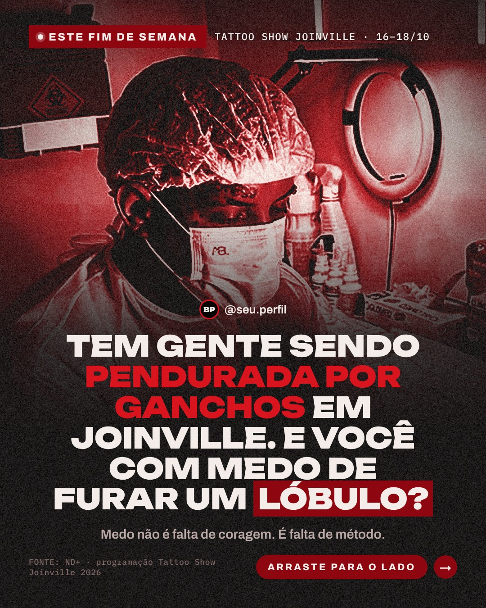</a>
  <div class="corpo">
    <p class="meta"><span class="data">14/10 · qua</span><span>Iniciante</span><span class="chip ok">Pode impulsionar</span></p>
    <h3>Ganchos em Joinville</h3>
    <p class="nota">Pode impulsionar. Sem foto de suspensão no anúncio (Meta barra imagem chocante).</p>
    <h4>Roteiro dos slides</h4>
    <ol class="slides"><li>Capa.</li><li>De 16 a 18 de outubro, a 11ª Tattoo Show Joinville tem show de suspensão corporal e um espaço só de piercing.</li><li>Suspensão é o corpo sustentado por ganchos que atravessam a pele. Só acontece com equipe treinada e protocolo rígido.</li><li>O que torna isso possível não é coragem. É método, anatomia e biossegurança.</li><li>Agora você: com medo de furar um lóbulo. É o mesmo medo, só que sem método.</li><li>Os 3 medos de quem começa: machucar o cliente, causar infecção, errar a posição.</li><li>Cada um tem resposta técnica: anatomia e marcação; protocolo de esterilização e descarte; joia e calibre certos.</li><li>O curso começa exatamente por esses três pontos.</li><li>Curso de Body Piercing para iniciantes e profissionais. R$250 ou 12x. Link na bio.</li></ol>
    <div class="leg-cab"><h4>Legenda</h4><button type="button" class="copiar" data-alvo="leg-c03">Copiar legenda</button></div>
    <pre class="legenda" id="leg-c03">Esse fim de semana tem gente sendo suspensa por ganchos em Joinville.

E tem gente que sonha em ser piercer mas trava no primeiro lóbulo.

O medo some quando o método aparece. Curso no link da bio.</pre>
    <h4>Fontes da notícia</h4>
    <ul class="fontes"><li><a href="https://ndmais.com.br/cultura/tattoo-show-joinville-2026-programacao-shows-atracoes" target="_blank" rel="noopener">ND+: Tattoo Show Joinville 2026, programação</a></li></ul>
  </div>
</article>

<article class="pauta" id="c04">
  <a class="capa" href="capas/c04-capa.jpg" target="_blank" rel="noopener">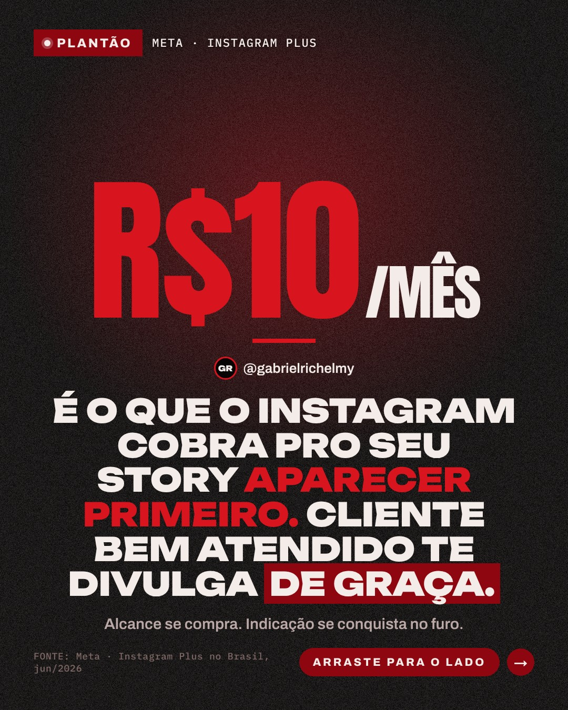</a>
  <div class="corpo">
    <p class="meta"><span class="data">19/10 · seg</span><span>Profissional</span><span class="chip ok">Pode impulsionar</span></p>
    <h3>Instagram virou pago</h3>
    <p class="nota">Pode impulsionar. Não use logo do Instagram no criativo do anúncio.</p>
    <h4>Roteiro dos slides</h4>
    <ol class="slides"><li>Capa.</li><li>Desde junho existe o Instagram Plus no Brasil: R$10 por mês. Inclui story com prioridade de entrega, story de 48h e até 6 posts fixados.</li><li>A versão gratuita continua. Mas o recado é claro: alcance virou produto.</li><li>Estúdio que depende só de alcance vai pagar cada vez mais pra ser visto.</li><li>Estúdio que vive de indicação paga menos: o cliente cicatrizou bem, mostrou pra amiga, a amiga marcou horário.</li><li>Indicação nasce em 3 momentos: o atendimento, a cicatrização e o pós-cuidado que você ensina.</li><li>Cicatrização ruim também viraliza. Cada furo inflamado é um story falando mal de você.</li><li>No curso: protocolo de pós-cuidado, joia certa pra cada região e como transformar cliente em indicação.</li><li>Curso de Body Piercing para iniciantes e profissionais. R$250 ou 12x. Link na bio.</li></ol>
    <div class="leg-cab"><h4>Legenda</h4><button type="button" class="copiar" data-alvo="leg-c04">Copiar legenda</button></div>
    <pre class="legenda" id="leg-c04">O Instagram agora cobra R$10/mês pro seu story aparecer primeiro.

Tem estúdio que vai pagar. Tem estúdio que nem precisa: o cliente cicatriza bem e faz a propaganda sozinho.

De que lado você quer estar?</pre>
    <h4>Fontes da notícia</h4>
    <ul class="fontes"><li><a href="https://www.jornalopcao.com.br/tecnologia/instagram-passa-a-ter-assinatura-paga-no-brasil-entenda-o-que-muda-833913/" target="_blank" rel="noopener">Jornal Opção: Instagram passa a ter assinatura paga no Brasil</a></li><li><a href="https://www.meioemensagem.com.br/midia/meta-lanca-assinatura-premium-do-instagram-no-brasil" target="_blank" rel="noopener">Meio &amp; Mensagem: Meta lança assinatura premium do Instagram no Brasil</a></li></ul>
  </div>
</article>

<article class="pauta" id="c05">
  <a class="capa" href="capas/c05-capa.jpg" target="_blank" rel="noopener">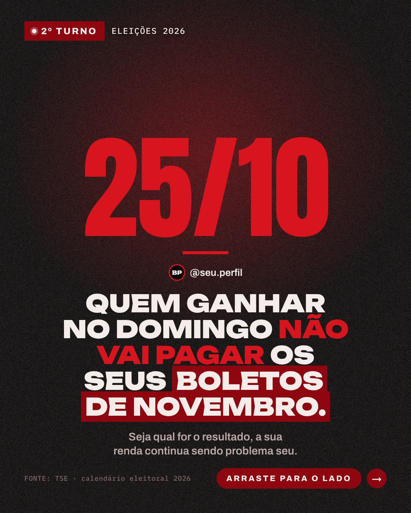</a>
  <div class="corpo">
    <p class="meta"><span class="data">23/10 · sex</span><span>Ambos</span><span class="chip no">Só orgânico</span></p>
    <h3>Domingo, 25</h3>
    <p class="nota">Cita eleição: só orgânico. Nunca tome lado.</p>
    <h4>Roteiro dos slides</h4>
    <ol class="slides"><li>Capa.</li><li>Domingo, 25 de outubro: 2º turno, das 8h às 17h (horário de Brasília).</li><li>Seja quem for, nada muda na sua conta no dia 26.</li><li>O boleto de novembro continua chegando no seu nome.</li><li>O que depende só de você: ter uma habilidade que alguém paga pra usar.</li><li>Piercing é serviço pago na hora, por procedimento, com cliente que volta pra trocar joia e fazer o próximo furo.</li><li>Começa com estudo: anatomia, biossegurança, técnica, joia e preço.</li><li>Vote no domingo. Invista em você hoje. Curso de Body Piercing, R$250, link na bio.</li></ol>
    <div class="leg-cab"><h4>Legenda</h4><button type="button" class="copiar" data-alvo="leg-c05">Copiar legenda</button></div>
    <pre class="legenda" id="leg-c05">Domingo o Brasil escolhe. Segunda-feira a vida continua, com boleto e tudo.

Qualquer que seja o resultado, ter uma profissão na mão é decisão sua.

Vote. E invista em você.</pre>
    <h4>Fontes da notícia</h4>
    <ul class="fontes"><li><a href="https://movimentoeconomico.com.br/politica/eleicoes-2026/2026/10/04/quando-sera-o-segundo-turno-das-eleicoes-veja-a-data/" target="_blank" rel="noopener">Movimento Econômico: data do 2º turno</a></li></ul>
  </div>
</article>

<article class="pauta" id="c06">
  <a class="capa" href="capas/c06-capa.jpg" target="_blank" rel="noopener">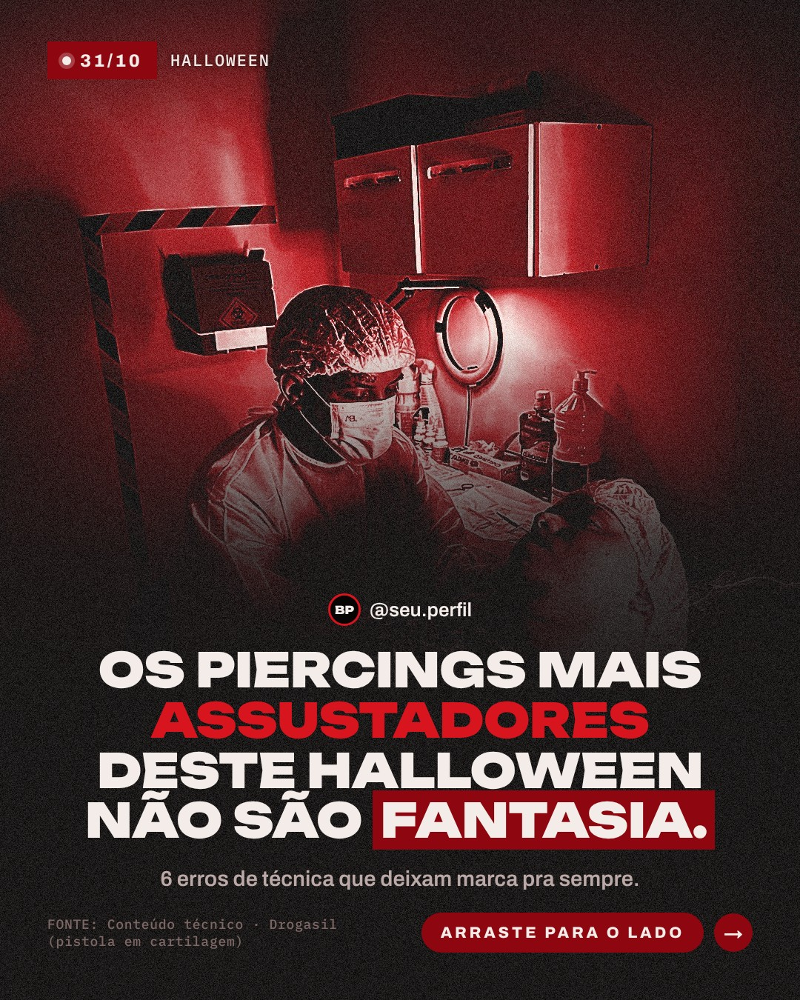</a>
  <div class="corpo">
    <p class="meta"><span class="data">29/10 · qui</span><span>Ambos</span><span class="chip ok">Pode impulsionar</span></p>
    <h3>Halloween de verdade</h3>
    <p class="nota">Pode impulsionar só sem fotos de ferida, sangue ou infecção.</p>
    <h4>Roteiro dos slides</h4>
    <ol class="slides"><li>Capa.</li><li>Nada de sangue falso. Estes são os sustos reais de quem fura sem técnica.</li><li>1. Pistola em cartilagem. O impacto machuca o tecido. Até uma grande rede de farmácia diz que o método não serve pra cartilagem.</li><li>2. Joia de material errado: irritação, reação e cicatrização que não fecha.</li><li>3. Posição errada: furo torto que nenhuma joia disfarça.</li><li>4. Haste curta demais: com o inchaço, a joia afunda na pele.</li><li>5. Esterilização de mentira: o risco que o cliente não vê.</li><li>6. Pós-cuidado mal explicado: o cliente faz tudo errado em casa e a culpa cai em você.</li><li>Todos esses erros se evitam com técnica. É o que o curso ensina.</li><li>Curso de Body Piercing para iniciantes e profissionais. R$250 ou 12x. Link na bio.</li></ol>
    <div class="leg-cab"><h4>Legenda</h4><button type="button" class="copiar" data-alvo="leg-c06">Copiar legenda</button></div>
    <pre class="legenda" id="leg-c06">O susto mais caro do Halloween não vem de fantasia. Vem de furo malfeito.

Salva esse carrossel e manda pra quem está pensando em furar com qualquer um.</pre>
    <h4>Fontes da notícia</h4>
    <ul class="fontes"><li><a href="https://www.drogasil.com.br/blog/beleza/corpo/furar-orelha-na-farmacia-tudo-que-voce-precisa-saber" target="_blank" rel="noopener">Drogasil: furar orelha na farmácia (pistola não serve para cartilagem)</a></li></ul>
  </div>
</article>

<article class="pauta" id="c07">
  <a class="capa" href="capas/c07-capa.jpg" target="_blank" rel="noopener">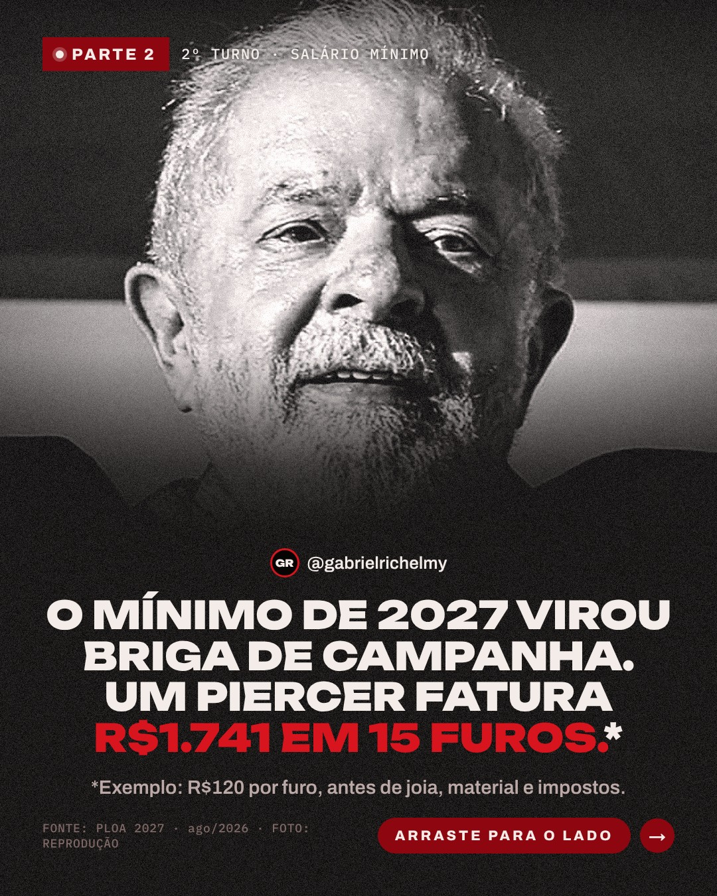</a>
  <div class="corpo">
    <p class="meta"><span class="data">03/11 · ter</span><span>Iniciante</span><span class="chip ok">Pode impulsionar</span></p>
    <h3>R$ 1.741</h3>
    <p class="nota">Pode impulsionar, mantendo a conta como exemplo e o asterisco visível. Nunca escreva “você vai ganhar”.</p>
    <h4>Roteiro dos slides</h4>
    <ol class="slides"><li>Capa.</li><li>O projeto de orçamento de 2027 prevê salário mínimo de R$1.741. Hoje é R$1.621. São R$120 a mais.</li><li>Agora a conta que ninguém te mostra.</li><li>Exemplo: furo a R$120. O preço muda por cidade; fontes do setor citam de R$40 a R$240 por furo, conforme região e joia.</li><li>R$1.741 ÷ R$120 = 14,5. Quinze furos. Menos de 4 por semana.</li><li>Isso é faturamento, não lucro. Sai joia, material descartável, espaço e impostos. E você precisa de alvará sanitário.</li><li>No começo você vai furar menos. Os primeiros clientes vêm de amigos, indicação e redes.</li><li>O curso custa R$250. É o valor de uns 2 furos.</li><li>Curso de Body Piercing para iniciantes e profissionais. R$250 ou 12x. Link na bio.</li></ol>
    <div class="leg-cab"><h4>Legenda</h4><button type="button" class="copiar" data-alvo="leg-c07">Copiar legenda</button></div>
    <pre class="legenda" id="leg-c07">R$1.741 é o salário mínimo proposto pra 2027.

Fiz a conta de quantos furos isso dá. Com os custos na mesa, sem prometer milagre.

Valores de exemplo; o preço do furo varia na sua cidade.</pre>
    <h4>Fontes da notícia</h4>
    <ul class="fontes"><li><a href="https://www.itatiaia.com.br/economia/salario-minimo-2027-proposta-r-1741/" target="_blank" rel="noopener">Itatiaia: salário mínimo 2027, proposta de R$1.741</a></li><li><a href="https://www.portalinsights.com.br/perguntas-frequentes/quanto-um-body-piercer-ganha" target="_blank" rel="noopener">Portal Insights: faixa de preço por furo (fonte do setor)</a></li></ul>
  </div>
</article>

<article class="pauta" id="c08">
  <a class="capa" href="capas/c08-capa.jpg" target="_blank" rel="noopener">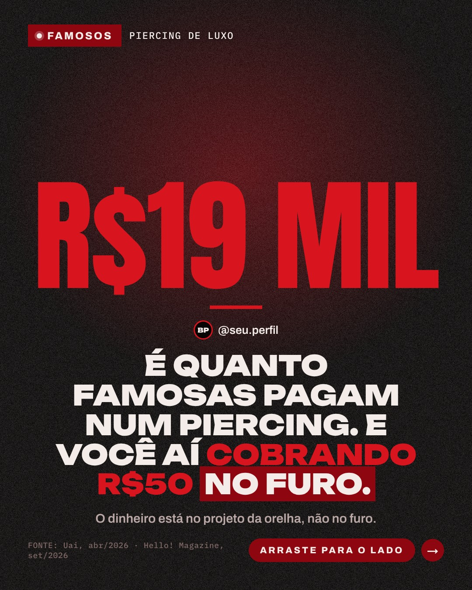</a>
  <div class="corpo">
    <p class="meta"><span class="data">06/11 · sex</span><span>Profissional</span><span class="chip ok">Pode impulsionar</span></p>
    <h3>R$ 19 mil</h3>
    <p class="nota">Pode impulsionar sem nome nem foto de famosa no criativo. Os nomes ficam só nos slides orgânicos.</p>
    <h4>Roteiro dos slides</h4>
    <ol class="slides"><li>Capa.</li><li>Bruna Marquezine, Sabrina Sato e outras famosas usam piercings de ouro e diamante que chegam a R$19 mil.</li><li>Em setembro, Kylie Jenner mostrou orelhas cravejadas de diamantes amarelos. No Oscar 2026, a curated ear roubou a cena.</li><li>Ninguém pagou R$19 mil pelo furo. Pagou pelo projeto e pela joia.</li><li>Piercer que vende só furo briga por preço com a farmácia.</li><li>Piercer que vende projeto vende 3, 4, 5 pontos, joias e o retorno pra troca.</li><li>Pra isso: anatomia da orelha, combinação de pontos, joia de qualidade e um orçamento bem apresentado.</li><li>É isso que o profissional aprende pra parar de cobrar R$50.</li><li>Curso de Body Piercing para iniciantes e profissionais. R$250 ou 12x. Link na bio.</li></ol>
    <div class="leg-cab"><h4>Legenda</h4><button type="button" class="copiar" data-alvo="leg-c08">Copiar legenda</button></div>
    <pre class="legenda" id="leg-c08">Tem famosa pagando R$19 mil num piercing. E tem piercer cobrando R$50 no furo.

A diferença não é o cliente. É o que você sabe vender.</pre>
    <h4>Fontes da notícia</h4>
    <ul class="fontes"><li><a href="https://www.uai.com.br/app/entretenimento/famosos/2026/04/20/not-famosos,381438/piercing-de-luxo-das-famosas-pode-chegar-a-r-19-mil-e-tendencia-viraliza.shtml" target="_blank" rel="noopener">Uai: piercing de luxo das famosas pode chegar a R$19 mil</a></li><li><a href="https://www.hellomagazine.com/us/922910/kylie-jenner-unveils-daring-new-piercing-thats-about-to-go-viral/" target="_blank" rel="noopener">Hello! Magazine: Kylie Jenner e os novos piercings</a></li><li><a href="https://www.cnnbrasil.com.br/lifestyle/curated-ears-roubaram-cena-no-oscar-2026-saiba-o-que-e/" target="_blank" rel="noopener">CNN Brasil: curated ears no Oscar 2026</a></li></ul>
  </div>
</article>

<article class="pauta" id="c09">
  <a class="capa" href="capas/c09-capa.jpg" target="_blank" rel="noopener">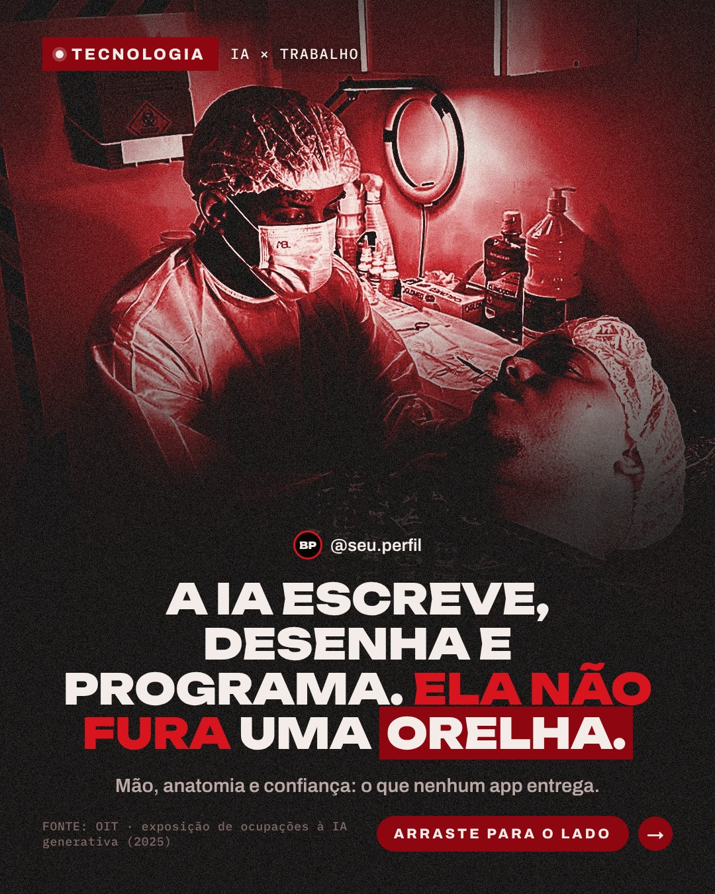</a>
  <div class="corpo">
    <p class="meta"><span class="data">10/11 · ter</span><span>Iniciante</span><span class="chip ok">Pode impulsionar</span></p>
    <h3>A IA não fura</h3>
    <p class="nota">Pode impulsionar.</p>
    <h4>Roteiro dos slides</h4>
    <ol class="slides"><li>Capa.</li><li>A pergunta de 2026: “a IA vai pegar meu emprego?”</li><li>O índice da OIT de 2025 mede a exposição de cada ocupação à IA generativa. No topo estão as funções de escritório, como digitação e entrada de dados.</li><li>A IA escreve legenda. Não avalia anatomia, não segura uma agulha e não acalma cliente nervoso.</li><li>Piercing é técnica, mão e confiança. As três coisas que um aplicativo não entrega.</li><li>E a IA ainda trabalha pra você: agenda, legenda, resposta no direct. Você fica com o que dá dinheiro, o atendimento.</li><li>Profissão de mão se aprende com método.</li><li>Curso de Body Piercing para iniciantes e profissionais. R$250 ou 12x. Link na bio.</li></ol>
    <div class="leg-cab"><h4>Legenda</h4><button type="button" class="copiar" data-alvo="leg-c09">Copiar legenda</button></div>
    <pre class="legenda" id="leg-c09">A IA já escreve, desenha e programa.

Ainda não inventaram app que fure uma orelha com segurança.

Se você quer uma profissão que a tecnologia ajuda em vez de substituir, o curso está no link da bio.</pre>
    <h4>Fontes da notícia</h4>
    <ul class="fontes"><li><a href="https://webapps.ilo.org/static/english/intserv/working-papers/wp140/index.html" target="_blank" rel="noopener">OIT, Working Paper 140: Generative AI and Jobs (2025)</a></li><li><a href="https://www.wam.ae/en/article/bjrpwru-one-four-jobs-risk-being-transformed-genai-ilo" target="_blank" rel="noopener">WAM: uma em cada quatro ocupações exposta à IA generativa, diz OIT</a></li></ul>
  </div>
</article>

<article class="pauta" id="c10">
  <a class="capa" href="capas/c10-capa.jpg" target="_blank" rel="noopener">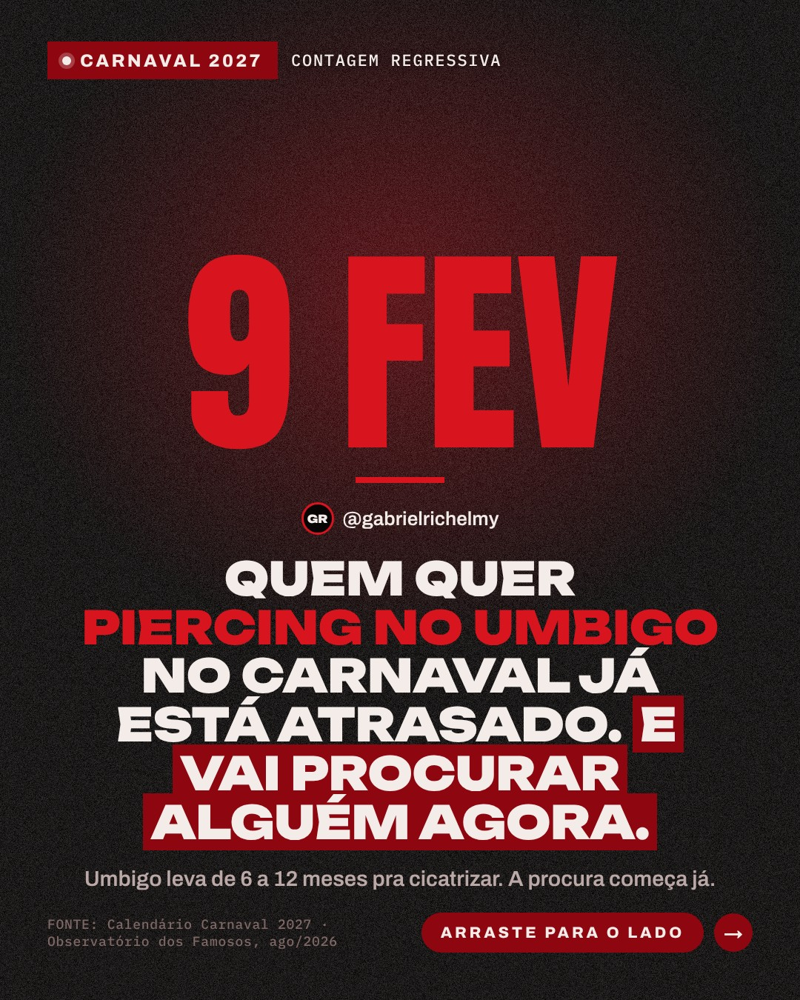</a>
  <div class="corpo">
    <p class="meta"><span class="data">13/11 · sex</span><span>Ambos</span><span class="chip ok">Pode impulsionar</span></p>
    <h3>Umbigo no Carnaval</h3>
    <p class="nota">Melhor candidato a anúncio da campanha. Impulsione do dia 13/11 até o fim de janeiro.</p>
    <h4>Roteiro dos slides</h4>
    <ol class="slides"><li>Capa.</li><li>Carnaval 2027: terça, <em>9 de fevereiro.</em> O pré-carnaval já começa em 30 e 31 de janeiro.</li><li>O piercing no umbigo <em>voltou com força</em> em 2026. Virginia Fonseca e Maya Massafera ajudaram a trazer de volta.</li><li>Só que o umbigo leva de <em>6 a 12 meses</em> pra cicatrizar por completo.</li><li>Ou seja: quem quer ir pra avenida com ele <em>já está atrasado.</em> E vai procurar um piercer nas próximas semanas.</li><li>Iniciante: é a <em>maior janela de procura do ano</em> pra começar. Profissional: é hora de agenda cheia e protocolo pronto.</li><li>O que esse cliente precisa ouvir: <em>nem todo umbigo serve,</em> qual joia usar e como cuidar com roupa apertada e suor no Carnaval.</li><li>Quem estudar agora <em>atende essa fila.</em> Quem deixar pra janeiro vai só assistir.</li><li>Curso de Body Piercing para iniciantes e profissionais. R$250 ou 12x. Link na bio.</li></ol>
    <div class="leg-cab"><h4>Legenda</h4><button type="button" class="copiar" data-alvo="leg-c10">Copiar legenda</button></div>
    <pre class="legenda" id="leg-c10">Faltam menos de 90 dias pro Carnaval e o piercing no umbigo voltou.

Quem quer desfilar com ele já está atrasado, e vai procurar um piercer agora.

Você vai atender essa fila ou assistir?</pre>
    <h4>Fontes da notícia</h4>
    <ul class="fontes"><li><a href="https://observatoriodosfamosos.com.br/noticia/piercing-no-umbigo-febre-dos-anos-2000-retorna-repaginado-e-conquista-famosas" target="_blank" rel="noopener">Observatório dos Famosos: piercing no umbigo volta com força em 2026</a></li><li><a href="https://www.band.com.br/entretenimento/carnaval/noticias/quando-e-o-carnaval-em-2027-veja-a-data-202602081140" target="_blank" rel="noopener">Band: quando é o Carnaval 2027</a></li></ul>
  </div>
</article>

<article class="pauta" id="c11">
  <a class="capa" href="capas/c11-capa.jpg" target="_blank" rel="noopener">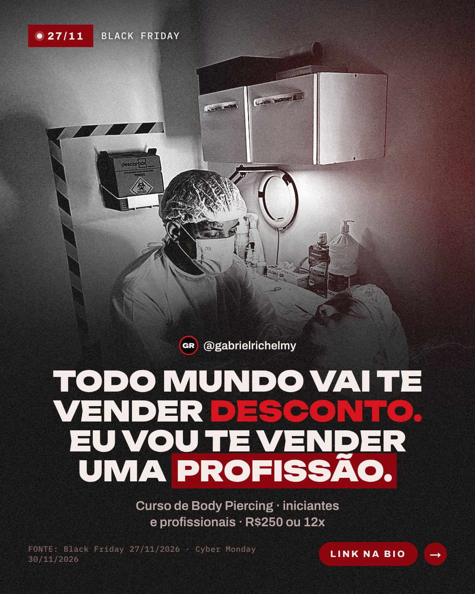</a>
  <div class="corpo">
    <p class="meta"><span class="data">23/11 · seg</span><span>Ambos</span><span class="chip ok">Pode impulsionar</span></p>
    <h3>Black Friday</h3>
    <p class="nota">Post de venda. Impulsione de 23 a 30/11 para quem engajou nos carrosséis anteriores.</p>
    <h4>Roteiro dos slides</h4>
    <ol class="slides"><li>Capa.</li><li>Black Friday, 27 de novembro. Você vai ver desconto em celular, TV e tênis.</li><li>Tudo isso perde valor no dia em que sai da caixa.</li><li>Uma profissão ganha valor a cada cliente atendido.</li><li>Curso de Body Piercing: do zero pra quem está começando, atualização pra quem já fura.</li><li>Na Black Friday o preço continua R$250, com um bônus: <b>defina: aula de precificação, checklist de biossegurança ou modelo de termo de consentimento</b>.</li><li>Bônus válido até segunda, 30/11.</li><li>Curso de Body Piercing para iniciantes e profissionais. R$250 ou 12x. Link na bio.</li></ol>
    <div class="leg-cab"><h4>Legenda</h4><button type="button" class="copiar" data-alvo="leg-c11">Copiar legenda</button></div>
    <pre class="legenda" id="leg-c11">Black Friday é desconto em coisa que perde valor.

Esse ano, compra uma coisa que ganha valor a cada cliente.

Curso de Body Piercing com bônus até 30/11. Link na bio.</pre>
    <h4>Fontes da notícia</h4>
    <ul class="fontes"><li><a href="https://centraldovarejo.com.br/black-friday-2026-data-faturamento-e-preparacao-do-varejo/" target="_blank" rel="noopener">Central do Varejo: Black Friday 2026, data</a></li></ul>
  </div>
</article></div>
  </section>

  <section class="secao" id="completo">
    <header><h2>Carrossel completo: Umbigo no Carnaval</h2><p>Os 9 slides prontos. Use o mesmo modelo (número grande, régua vermelha, texto em bloco) para montar os slides internos das outras pautas.</p></header>
    <div class="tira"><a href="capas/c10/01.jpg" target="_blank" rel="noopener"></a><a href="capas/c10/02.jpg" target="_blank" rel="noopener">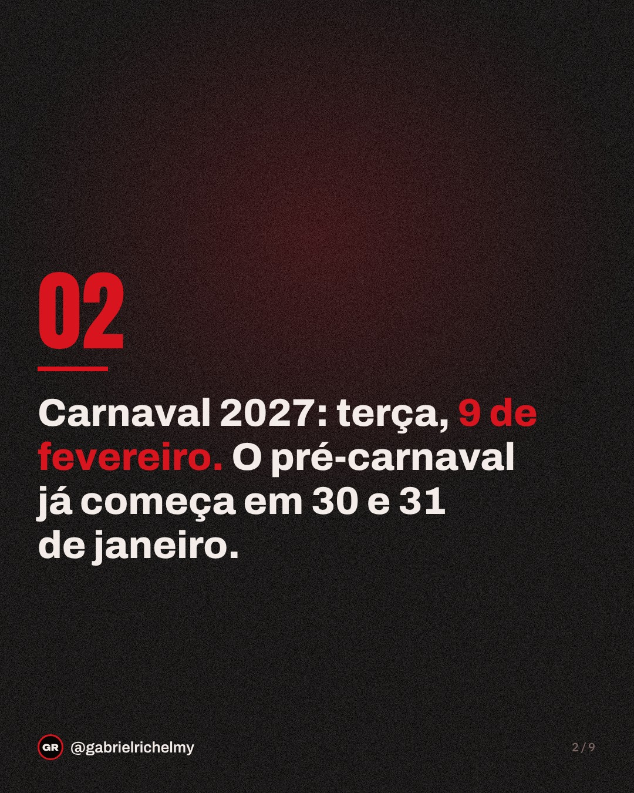</a><a href="capas/c10/03.jpg" target="_blank" rel="noopener">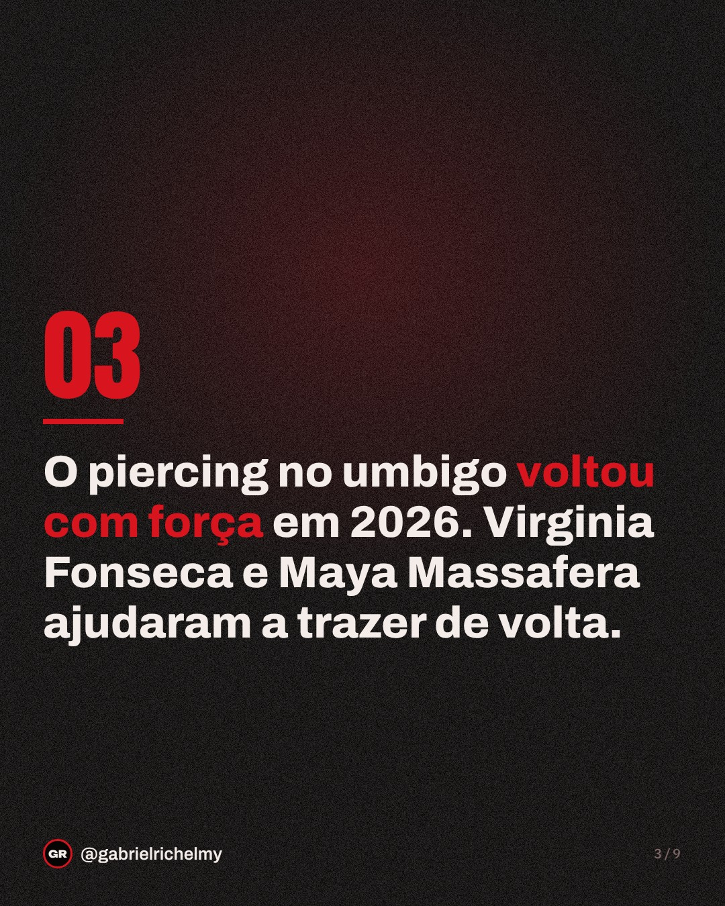</a><a href="capas/c10/04.jpg" target="_blank" rel="noopener">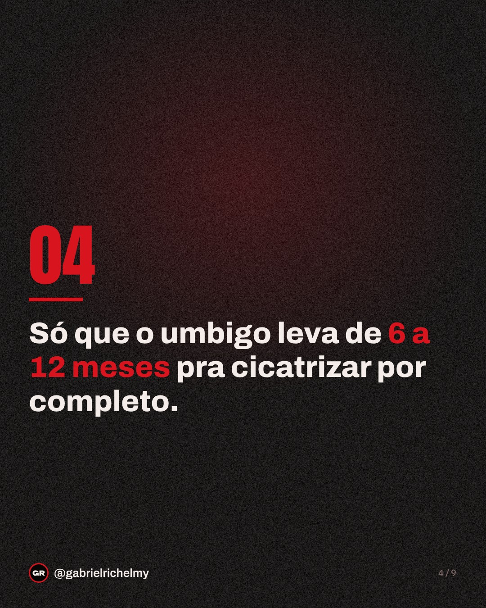</a><a href="capas/c10/05.jpg" target="_blank" rel="noopener">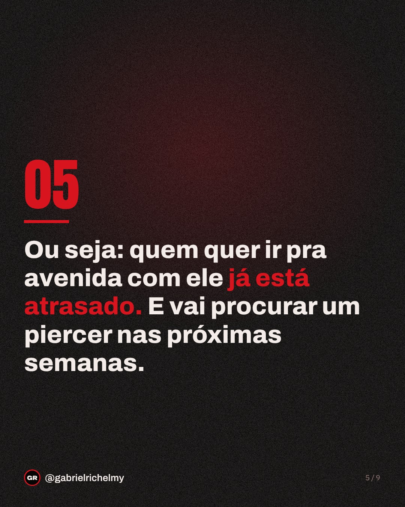</a><a href="capas/c10/06.jpg" target="_blank" rel="noopener">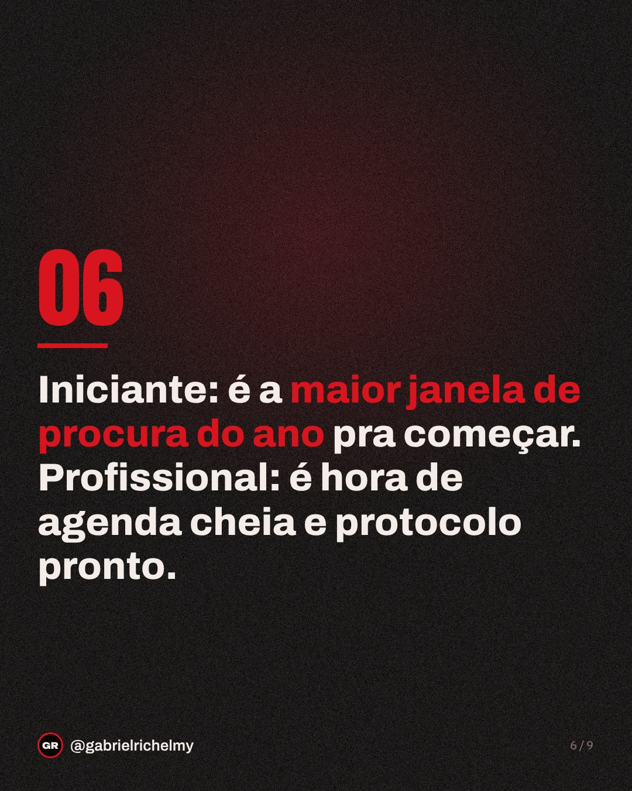</a><a href="capas/c10/07.jpg" target="_blank" rel="noopener">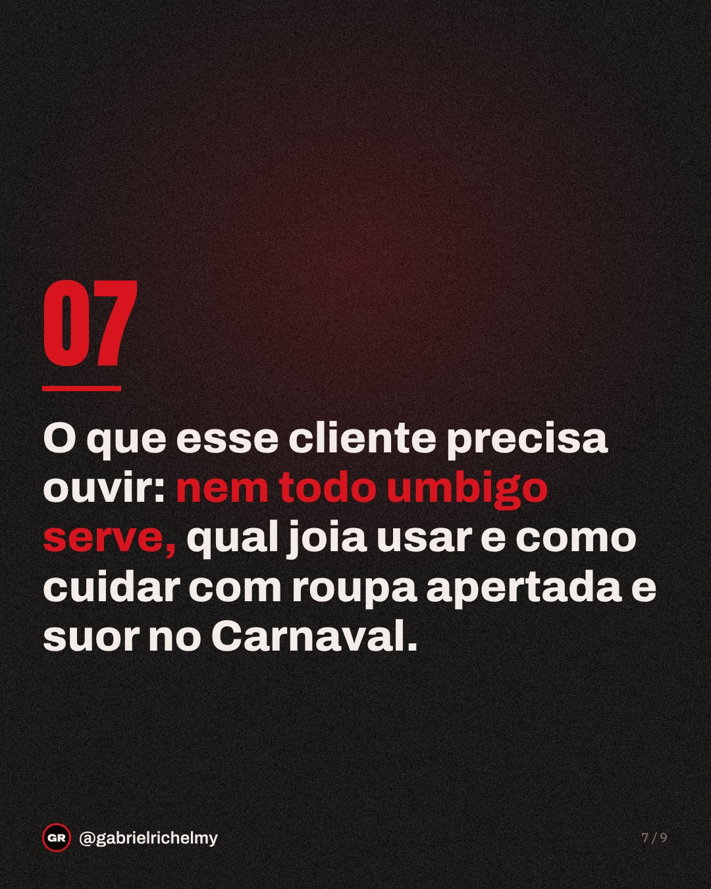</a><a href="capas/c10/08.jpg" target="_blank" rel="noopener">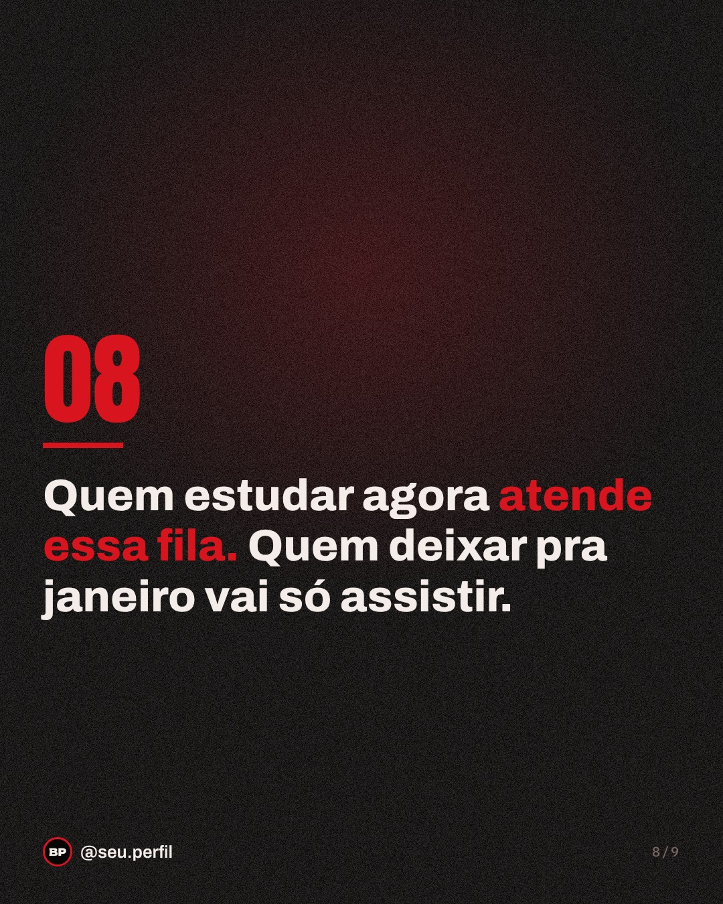</a><a href="capas/c10/09.jpg" target="_blank" rel="noopener">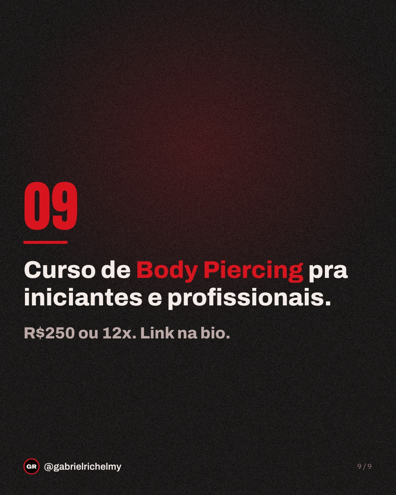</a></div>
  </section>

  <section class="secao" id="fotos">
    <header><h2>Foto do profissional, tratada</h2><p>Três recortes 4:5 em dois tratamentos. “Sangue” é duotone vermelho e preto; “noir” é preto e branco duro com luz vermelha.</p></header>
    <div class="fotos"><figure><a href="fotos/cena-sangue.jpg" target="_blank" rel="noopener">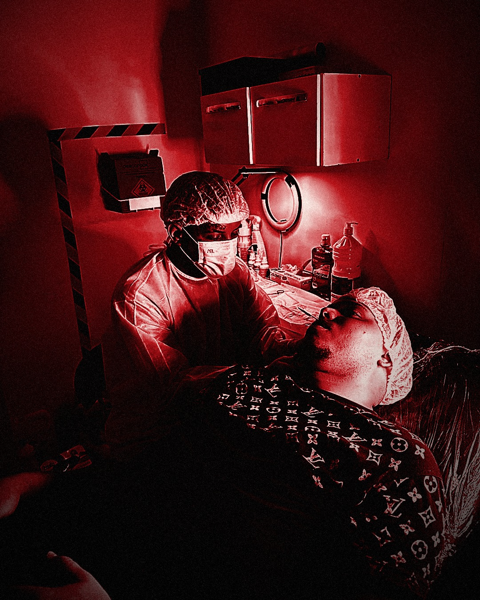</a><figcaption><span class="mono">cena-sangue.jpg</span>Sala inteira: descarte, EPI, bancada</figcaption></figure><figure><a href="fotos/cena-noir.jpg" target="_blank" rel="noopener">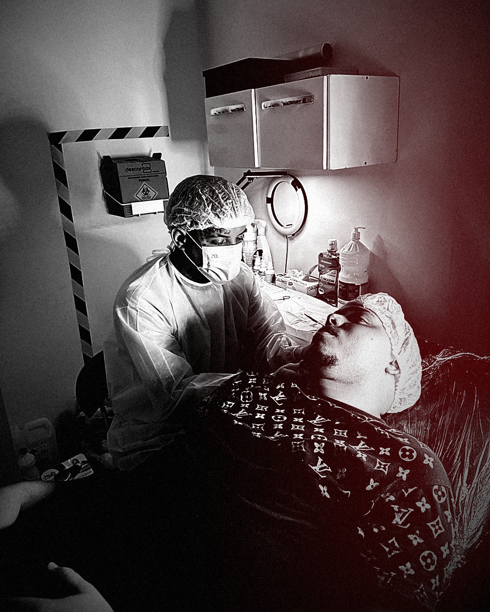</a><figcaption><span class="mono">cena-noir.jpg</span>Sala inteira: descarte, EPI, bancada</figcaption></figure><figure><a href="fotos/atendimento-sangue.jpg" target="_blank" rel="noopener">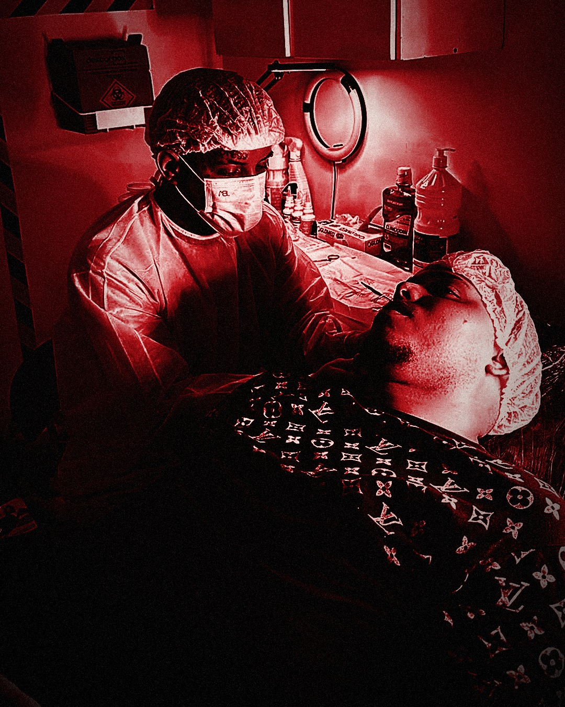</a><figcaption><span class="mono">atendimento-sangue.jpg</span>Piercer e cliente</figcaption></figure><figure><a href="fotos/atendimento-noir.jpg" target="_blank" rel="noopener">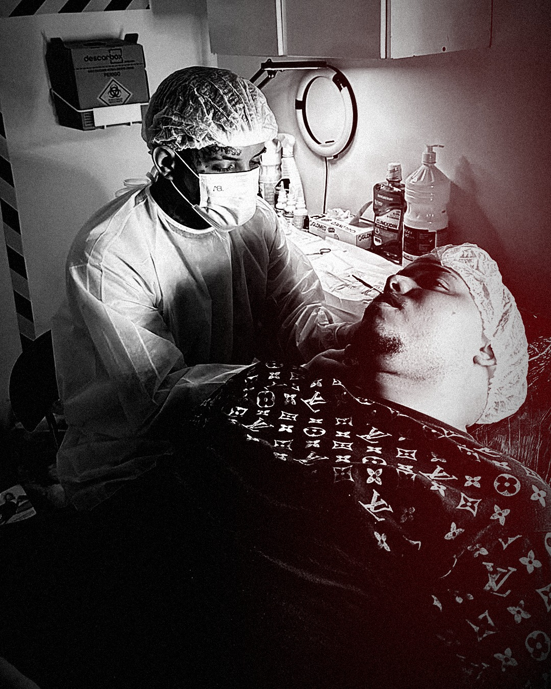</a><figcaption><span class="mono">atendimento-noir.jpg</span>Piercer e cliente</figcaption></figure><figure><a href="fotos/piercer-sangue.jpg" target="_blank" rel="noopener">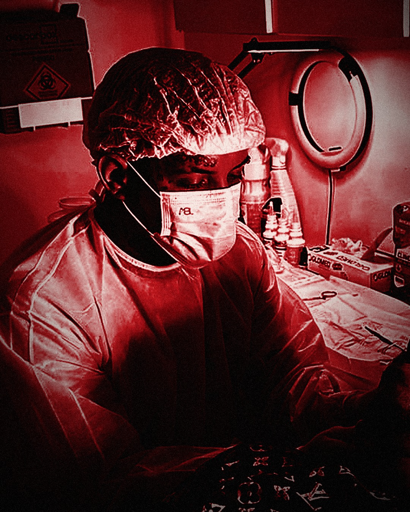</a><figcaption><span class="mono">piercer-sangue.jpg</span>Close do profissional</figcaption></figure><figure><a href="fotos/piercer-noir.jpg" target="_blank" rel="noopener"></a><figcaption><span class="mono">piercer-noir.jpg</span>Close do profissional</figcaption></figure></div>
    <p class="aviso">O cliente aparece no rosto nos recortes “cena” e “atendimento”. Peça autorização de uso de imagem por escrito antes de postar, ou use o recorte “piercer”. A estampa de marca na camiseta do cliente fica coberta pelo degradê nas capas; evite essa área em anúncio pago.</p>
  </section>

  <section class="secao" id="funil">
    <header><h2>Funil e números</h2><p>Ticket baixo só fecha a conta com volume e custo por venda controlado. O orgânico atrai, o anúncio converte quem já te conhece.</p></header>
    <div class="duas">
      <ol class="passos">
        <li><div><strong>Orgânico</strong>As pautas do espelho, três por semana, mais Reels com os ganchos abaixo.</div></li>
        <li><div><strong>Impulsionar</strong>Só pautas marcadas “pode impulsionar”, e só as que tiverem mais salvamentos e compartilhamentos nas primeiras 48h. Público frio: 18 a 40 anos, interesses em piercing, tatuagem, body art, estética e renda extra.</div></li>
        <li><div><strong>Retargeting</strong>Quem engajou com o perfil nos últimos 30 dias ou visitou a página de vendas recebe os 3 anúncios de venda.</div></li>
        <li><div><strong>Recuperação</strong>Carrinho abandonado: mensagem no WhatsApp ou e-mail em até 1 hora.</div></li>
      </ol>
      <dl class="contas">
        <div><dt>Preço</dt><dd>R$250 ou 12x de ~R$25</dd></div>
        <div><dt>Líquido por venda (taxa ~10%, confira a sua)</dt><dd>~R$225</dd></div>
        <div><dt>Custo por venda de empate</dt><dd>~R$225</dd></div>
        <div><dt>Custo por venda alvo</dt><dd>até R$75</dd></div>
        <div><dt>Troque o criativo se passar de</dt><dd>R$110 por 3 dias</dd></div>
        <div><dt>Teste inicial</dt><dd>R$50/dia × 7 dias</dd></div>
        <div><dt>Order bump sugerido</dt><dd>R$27 a R$47</dd></div>
      </dl>
    </div>
    <p class="peq">Order bump: kit de modelos (ficha de anamnese, termo de consentimento, tabela de preços). Concorrência: encontrei curso online de body piercing a R$297 (12x de R$29,64). Seu R$250 fica abaixo; venda como “o preço de uns 2 furos” e nunca cite concorrente no anúncio.</p>
  </section>

  <section class="secao" id="anuncios">
    <header><h2>Anúncios de venda e Reels</h2><p>Os anúncios rodam só no retargeting. Os ganchos de Reels são para gravar com o profissional da foto.</p></header>
    <div class="anuncios"><div class="anuncio"><p class="mono">ANÚNCIO · MEDO</p><h4>Do medo ao primeiro furo, com método</h4><pre class="legenda" id="ad-0">Medo de machucar alguém? É o primeiro problema que o curso resolve: anatomia, marcação e protocolo antes do primeiro cliente.

Curso de Body Piercing para iniciantes. R$250 ou 12x.</pre><p class="peq">Imagem: fotos/piercer-noir.jpg</p><button type="button" class="copiar" data-alvo="ad-0">Copiar texto</button></div><div class="anuncio"><p class="mono">ANÚNCIO · CONTA</p><h4>R$250. Uns 2 furos.</h4><pre class="legenda" id="ad-1">O curso custa R$250. Num exemplo de R$120 por furo, isso é o valor de uns 2 atendimentos.

(Preço do furo varia por cidade. Atender exige alvará sanitário.)</pre><p class="peq">Imagem: capa tipográfica do c07 sem o título</p><button type="button" class="copiar" data-alvo="ad-1">Copiar texto</button></div><div class="anuncio"><p class="mono">ANÚNCIO · PROVA</p><h4>Biossegurança não é detalhe</h4><pre class="legenda" id="ad-2">Touca, máscara, avental, descarte de perfurocortante e clorexidina na bancada. É assim que se trabalha, e é assim que você vai aprender.

Curso de Body Piercing para iniciantes e profissionais.</pre><p class="peq">Imagem: fotos/cena-sangue.jpg</p><button type="button" class="copiar" data-alvo="ad-2">Copiar texto</button></div></div>
    <h3>Ganchos de Reels</h3>
    <ul class="reels"><li><strong>“Se o seu piercer não abre a agulha na sua frente, levanta e vai embora.”</strong><span>Autoridade. Pode impulsionar.</span></li><li><strong>“Eu furo de touca, máscara e avental. Não é exagero, é o mínimo.”</strong><span>Use o vídeo do atendimento da foto.</span></li><li><strong>“3 sinais de que quem te furou não sabia o que estava fazendo.”</strong><span>Educativo. Pode impulsionar.</span></li><li><strong>“R$250 numa bet somem em 10 minutos. R$250 aqui viram profissão.”</strong><span>Pauta quente (bets). Só orgânico: anúncio que cita aposta cai na política de jogos da Meta.</span></li><li><strong>“Quanto custa montar um cantinho de piercing? Fiz a lista.”</strong><span>Iniciante. Mostre custos reais, com alvará.</span></li></ul>
  </section>

  <section class="secao" id="regras">
    <header><h2>Regras do jogo</h2><p>Agressivo na capa, correto nos fatos. Isso é o que evita post derrubado, anúncio reprovado e processo.</p></header>
    <ul class="regras">
      <li><strong>Eleição só no orgânico</strong>As pautas 01 e 05 não podem ser impulsionadas. A Lei 9.504/97 (art. 57-C) só permite impulsionar conteúdo eleitoral a candidatos, partidos e coligações, e a Meta exige autorização para anúncio sobre política. Cite os dois candidatos ou nenhum.</li>
      <li><strong>Nada de foto de famoso ou político</strong>Uso comercial de imagem sem autorização gera indenização (Código Civil, art. 20; STJ, Súmula 403). Por isso as capas usam tipografia ou a foto do próprio profissional.</li>
      <li><strong>Renda sempre como exemplo</strong>Mostre a conta com custos e asterisco. Nunca “você vai ganhar”. A Meta reprova anúncio com promessa de ganho.</li>
      <li><strong>Saúde sem promessa</strong>Nada de “zero risco” ou “não inflama”. Nada de foto de ferida, sangue, infecção ou suspensão em anúncio.</li>
      <li><strong>Curso não é alvará</strong>Deixe claro na página de vendas que atender exige alvará sanitário. A Anvisa classifica piercing como atividade de alto risco.</li>
      <li><strong>Menores de idade</strong>Autorização e presença dos responsáveis, e confira a lei do seu estado e município.</li>
    </ul>
  </section>

  <section class="secao" id="formula">
    <header><h2>Como fazer a próxima pauta em 2 horas</h2><p>Quando sair uma notícia nova, passe por estas cinco etapas, nesta ordem. Se a ponte com piercing precisar ser forçada, descarte a notícia.</p></header>
    <ol class="passos">
      <li><div><strong>Fato</strong>Notícia real com menos de 72 horas. Fonte e data no rodapé da capa.</div></li>
      <li><div><strong>Tensão</strong>O que o público sente com ela: medo, raiva, inveja ou pressa.</div></li>
      <li><div><strong>Ponte</strong>A ligação honesta entre a notícia e piercing.</div></li>
      <li><div><strong>Lição</strong>Um ensinamento de técnica ou de mercado, em 3 a 5 slides.</div></li>
      <li><div><strong>Oferta</strong>O curso no último slide e na legenda.</div></li>
    </ol>
    <p class="peq">Fontes de regras: <a href="https://www.planalto.gov.br/ccivil_03/leis/l9504.htm" target="_blank" rel="noopener">Lei 9.504/97</a> · <a href="https://www.planalto.gov.br/ccivil_03/leis/2002/l10406compilada.htm" target="_blank" rel="noopener">Código Civil</a> · <a href="https://www.gov.br/anvisa/pt-br/assuntos/servicosdesaude/saloes-tatuagens-creches/tatuagem-e-piercing" target="_blank" rel="noopener">Anvisa: tatuagem e piercing</a> · <a href="https://www.portalinsights.com.br/perguntas-frequentes/quanto-um-body-piercer-ganha" target="_blank" rel="noopener">preço de curso concorrente</a></p>
  </section>
</main>

<script>
document.querySelectorAll('.copiar').forEach(function (btn) {
  btn.addEventListener('click', function () {
    var alvo = document.getElementById(btn.dataset.alvo);
    var texto = alvo.textContent;
    var original = btn.textContent;
    function marcar() {
      var r = document.createRange(); r.selectNodeContents(alvo);
      var s = window.getSelection(); s.removeAllRanges(); s.addRange(r);
      btn.textContent = 'Texto selecionado';
      setTimeout(function () { btn.textContent = original; }, 1800);
    }
    try {
      navigator.clipboard.writeText(texto).then(function () {
        btn.textContent = 'Copiado';
        setTimeout(function () { btn.textContent = original; }, 1800);
      }, marcar);
    } catch (e) { marcar(); }
  });
});
</script>
